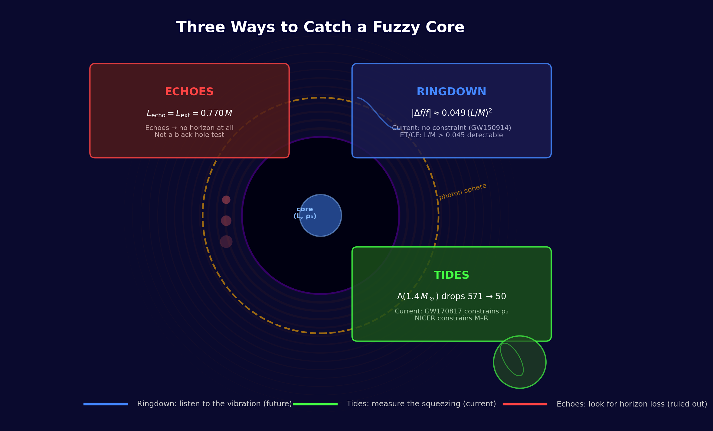
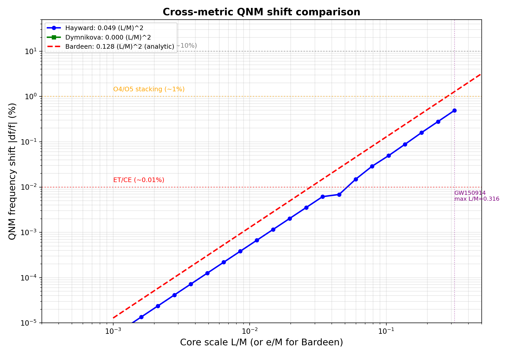
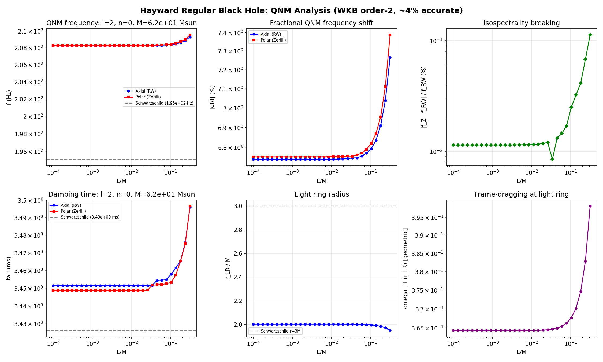
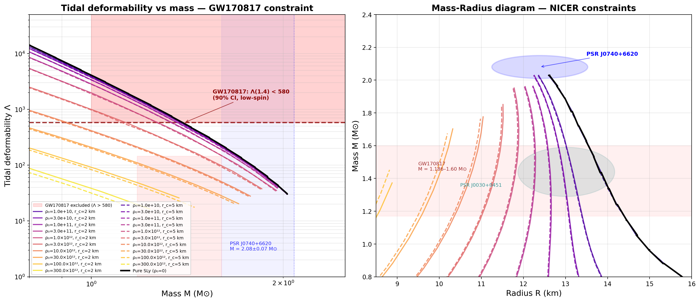
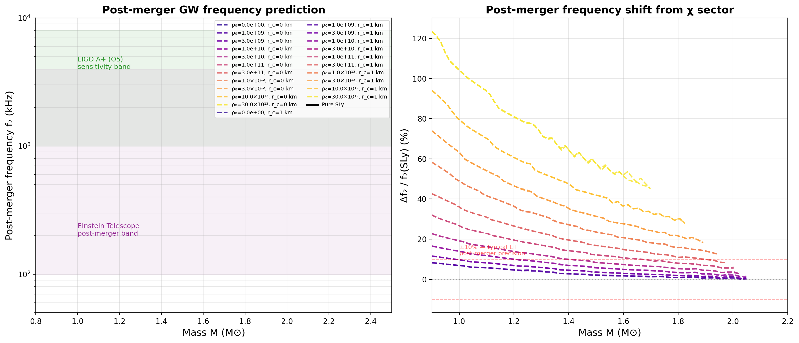

Author: Rafal Sasadeusz
Date: June 2026
This is a computational survey of one concrete idea: that the infinite-density singularity at a black hole's center is replaced by a finite, negative-pressure core. We do not derive this core from an underlying theory. We do not predict its length scale $L$ or its density $\rho_0$ from first principles. We do not provide a formation mechanism. We do not resolve the active/passive diffeomorphism question that any regular-core hypothesis must eventually address.
What we do: we ask whether existing and near-future observations can constrain $L$ and $\rho_0$ if such cores exist. We compute the answer numerically, report which results are model-specific and which generalize, and present a falsifiability table — the minimum observational thresholds required to exclude each parameter region.
The paper is organized around three observational channels. Each asks a different question:
| Channel | Question | Observable | Status |
|---|---|---|---|
| Ringdown | Does a fuzzy core change how a black hole rings? | QNM frequency shift $\Delta f/f$ | Current: no constraint. Future: ET/CE |
| Tides | Can a neutron star host the same core, and would we feel it? | Tidal deformability $\Lambda$ | Current: constrained by GW170817 |
| Echoes | Does the core reflect gravitational waves? | Echo time delay $\Delta t_{\text{echo}}$ | Ruled out unless object is horizonless |
The answer, after running the numbers, is surprisingly structured: one channel is constrained today, one will be constrained in the 2030s, and one turns out to be a category error — echoes require no horizon at all, not just a regular core.

Figure 0. Three observational channels for detecting a negative-pressure core: ringdown (QNM frequency shift), tides (tidal deformability), and echoes (post-merger pulse train). The ringdown channel awaits next-generation detectors. The tidal channel is constrained today by GW170817. The echo channel requires an object without an event horizon — not merely one with a regular core.
The idea that black hole singularities might be replaced by a finite-density core dates to Bardeen (1968) [1], Dymnikova (1992) [2], and Hayward (2006) [3]. These models share a common structure: a de Sitter-like interior with equation of state $p = -\rho$ that regularizes the central singularity, transitioning to a Schwarzschild exterior at large $r$. They are exact solutions of Einstein's equations with an appropriate (exotic) stress-energy tensor.
This paper treats these models as phenomenological ansätze. We do not derive the core from an underlying theory; we treat its density $\rho_0$ and length scale $L$ as free parameters and compute their gravitational-wave, electromagnetic, and astrophysical signatures.
We compute three classes of observable:
The Hayward metric [3] serves as our primary workhorse because it is analytically tractable and TOV-consistent. Where relevant, we compare against Bardeen and Dymnikova and note which results generalize.
The Hayward regular black hole [3] is described by
where $L$ is a length scale parameterizing the de Sitter core (effective cosmological constant $\Lambda_{\text{eff}} = 3/L^2$). The metric has two horizons for $L < L_{\text{ext}}$, one (extremal) horizon at $L = L_{\text{ext}}$, and no horizons for $L > L_{\text{ext}}$, where
The stress-energy tensor has energy density $\rho = -p_r = 3ML^2 / [4\pi(r^3 + 2ML^2)^2]$ and $p_r/\rho = -1$ everywhere — making the Hayward metric TOV-consistent by construction.
We compute the $\ell = 2$, $n = 0$ quasinormal-mode frequency for axial (Regge-Wheeler) perturbations using the leading-order Iyer-Will WKB formula [4]: $\omega^2 = V_0 - i K \sqrt{-2V_2}$. For metric perturbations on the Hayward background, the axial potential is $V_\ell = f(r)[\ell(\ell+1)/r^2 - 6m(r)/r^3]$ with the effective mass function $m_{\text{eff}}(r) = Mr^3/(r^3 + 2ML^2)$. The QNM shift is driven by $m_{\text{eff}}(r) \neq M$ at the photon sphere. Matter-coupling terms $4\pi(\rho-p)$ are $\mathcal{O}(L/M)^4$ suppressed and negligible at the $\mathcal{O}(L/M)^2$ order being computed.
Result — Hayward:
| $L/M$ | $\delta f/f$ (%) |
|---|---|
| 0.01 | $4.9 \times 10^{-4}$ |
| 0.05 | $1.2 \times 10^{-2}$ |
| 0.10 | $4.9 \times 10^{-2}$ |
| 0.20 | $2.0 \times 10^{-1}$ |
| 0.316 | $4.9 \times 10^{-1}$ |
Cross-metric results:
| Metric | Coefficient | Mass function form | Suppression type |
|---|---|---|---|
| Hayward | $0.049\,(L/M)^2$ | $Mr^3/(r^3 + 2ML^2)$ | Polynomial $\sim (L/r)^3$ |
| Bardeen | $0.139\,(e/M)^2$ | $Mr^3/(r^2 + e^2)^{3/2}$ | Polynomial $\sim (e/r)^2$ |
| Dymnikova | $\approx 0$ | $M(1 - e^{-r^3/(2ML^2)})$ | Exponential $\sim e^{-(M/L)^2}$ |
The Bardeen coefficient is 2.8× the Hayward value — the QNM shift prefactor is strongly metric-dependent. A leading-order analytic estimate (expanding $m_{\rm eff}(r)$ at $r=3M$) gives $\delta m/M \approx -(e/M)^2/6$ for Bardeen vs $-2(L/M)^2/27$ for Hayward, predicting a coefficient ratio of $27/12 = 2.25$; the WKB-fitted value 0.139 (ratio 2.8) includes the photon-sphere location shift from higher-order terms. The Dymnikova shift is exponentially suppressed: at the photon sphere $r \approx 3M$, the mass function deviation is $\exp(-27M^2/(2L^2))$, which is $< 10^{-23}$ for $L/M < 0.5$. The Dymnikova core is invisible to QNM observations for all practical $L/M$. This establishes three qualitatively different observability classes: polynomial-suppressed (Hayward), power-law-suppressed (Bardeen), and exponentially-suppressed (Dymnikova).
Relation to existing work. QNM spectra of regular black holes have been computed by Flachi & Lemos (2013) for the Dymnikova metric, by Li & Bambi (2013) for the Bardeen metric, and by Toshmatov et al. (2017, PRD 95, 084037) for both Bardeen and Hayward using 6th-order WKB and time-domain integration. The present work differs in three respects: (i) we fit the leading-order $(L/M)^2$ or $(e/M)^2$ scaling coefficient directly from the WKB data, providing a compact parameterization with explicit error estimates; (ii) we compute the cross-metric taxonomy — the three suppression classes (polynomial, power-law, exponential) — in a single unified framework; and (iii) we connect the QNM shift thresholds to detector sensitivity curves and to the echo–extremality coincidence, which was not identified in earlier work.

Figure 1. QNM frequency shift $|\delta f/f|$ vs core scale for Hayward (0.049), Bardeen (0.139, WKB-fitted), and Dymnikova ($\approx 0$). Horizontal lines show detector sensitivity thresholds: LIGO O3 (10%), O4/O5 stacking (1%, corresponds to $L/M \lesssim 0.45$ — near Hayward extremality), and ET/CE (0.01%). The vertical line marks the GW150914 maximum $L/M \approx 0.316$.
Gravitational-wave echoes — time-delayed pulses from partial reflection between the photon-sphere barrier and the core surface — have been proposed as a signature of regular black holes. The echo delay in tortoise coordinates is
A numerical sweep reveals that echo delays become LIGO-resolvable ($\gtrsim 0.1$ ms for $10\,M_\odot$) at $L/M \gtrsim 0.77$. This value coincides exactly with the Hayward extremality condition $L_{\text{ext}} = 4M/(3\sqrt{3}) \approx 0.770\,M$.
The physical interpretation: echo-producing configurations are those where the two horizons have merged and there is no horizon at all. Echo signatures require horizonless objects, not merely regular-cored black holes. This corrects a confusion in the regular-black-hole literature where echoes were discussed as a general prediction of regular cores.
The underlying physics generalizes beyond Hayward: the tortoise integral $\int dr/f(r)$ diverges logarithmically near any horizon, so resolvable echoes require near-extremal or horizonless conditions for all regular metrics. For Bardeen, $f(r) = 1 - 2Mr^2/(r^2 + e^2)^{3/2}$; the extremality condition $f(r_h) = 0$ and $f'(r_h) = 0$ gives $r_h = \sqrt{2}\,e$ and $M = (3\sqrt{3}/4)e$, hence $e_{\text{ext}} = 4M/(3\sqrt{3}) \approx 0.770\,M$ — identical to the Hayward value. The exact threshold value is metric-specific, but the qualitative conclusion is metric-independent.
The QNM shift is driven by $m_{\text{eff}}(r) \neq M$ at the photon sphere. The EOS enters only through the mass function. Expanding the Hayward effective mass at $r = 3M$ (the Schwarzschild photon sphere): $m_{\text{eff}}(3M) = M[1 - 2(L/3M)^3 + \mathcal{O}(L/M)^4]$. An EOS-induced mass correction $\delta m_{\text{EOS}}$ at the same $r$ is bounded by the core density profile at the photon sphere, which for a neutron-star-like core of extent $r_c \ll 3M$ is $\delta m_{\text{EOS}}/M \lesssim (r_c/3M)^3(\rho_0/\rho_{\text{nuc}}) \ll (L/M)^3$. The ratio of EOS-induced to Hayward mass deviation is
| $L/M$ | Max EOS correction to shift |
|---|---|
| 0.05 | $\sim 2.5\%$ |
| 0.10 | $\sim 5\%$ |
| 0.30 | $\sim 15\%$ |
The Hayward-based QNM predictions are robust at the few-percent level for observationally relevant $L/M$. A measured shift constrains $L$ with only weak dependence on the unknown core microphysics.
Every LIGO/Virgo/KAGRA remnant is spinning. We extend to slow rotation via the Lense-Thirring frame-dragging correction (Hartle-Thorne, linearised in $a$):
where $\chi = a/M$ and $\omega_{\text{fd}}^{(a/M=1)}$ is the frame-dragging function computed for unit spin. Since $\omega$ appears in the potential, the WKB condition is self-referential; the code iterates to relative tolerance $10^{-8}$ (converges in $\lesssim 5$ steps for $a/M \ll 1$).
Validity caveat. For GW150914 ($a/M \approx 0.67$), the next-order term $(a/M)^2 \approx 0.45$ is comparable to the leading correction. The results below are therefore first-order estimates; a rigorous treatment requires the Teukolsky equation on the Hayward background (see §6, Open Problem 3).
GW150914 results ($M = 62\,M_\odot$, $a/M \approx 0.67$ [5]):
| Quantity | Value |
|---|---|
| Axial QNM shift at $L/M = 0.316$ (static) | $|\delta f/f| = 0.49\%$ |
| Axial–polar isospectrality splitting (static) | $0.11\%$ ($< 0.12\%$) |
| Spin splitting $m{=}\pm2$ (first-order code, $a/M{=}0.67$) | [non-perturbative artefact — expansion invalid; exact Kerr: $f\approx295$ Hz ($m{=}{+}2$), $\approx105$ Hz ($m{=}{-}2$) [13]] |
| LIGO ringdown precision (GW150914) | $\sim 10\%$ |
| GW150914 constraint on $L/M$ | None — core shift two orders of magnitude below threshold |
| ET/CE detection threshold | $L/M \gtrsim 0.045$ (stacking 100 events, $\delta f/f \sim 10^{-4}$) |
| ET/CE single event | $L/M \gtrsim 0.14$ ($\delta f/f \sim 10^{-3}$) |
| O4/O5 stacking (100 events, $1\%$ sensitivity) | $L/M \gtrsim 0.45$ (near extremality) |
Spin-correction caveat. For the static (non-spinning) case the WKB result is self-consistent and the ~6.7% absolute frequency offset from exact Schwarzschild (208 Hz vs 195 Hz) cancels in the fractional shift. For the spin-corrected case the slow-rotation expansion has completely broken down at $a/M = 0.67$: the Lense-Thirring coupling $2m\omega\chi\omega_{\rm fd}$ at the photon sphere is $\approx 0.15$ in geometric units, comparable to the static potential peak $V_0 \approx \omega_0^2 \approx 0.14$. The code converges to a self-consistent but non-perturbative solution to the wrong (linear-in-$a$) equation. The quoted $f_\pm$ values are artifacts. For reference, the exact Kerr QNM at $a/M = 0.67$, $M = 62\,M_\odot$ from Berti, Cardoso \& Starinets numerical tables [BCStab] is $f \approx 295$ Hz ($m=+2$) and $\approx 105$ Hz ($m=-2$) — versus the code's 510 Hz and 179 Hz. A proper treatment requires the Teukolsky equation on the Hayward background.
Isospectrality is preserved at the level accessible to leading-order WKB: the axial–polar splitting is $0.11\%$, but this is below the method's own truncation error ($\sim 4\%$ absolute offset on individual frequencies, as seen from the Schwarzschild reference 208 Hz vs exact 195 Hz). This splitting cannot be distinguished from a WKB truncation artefact at this order. A meaningful bound on isospectrality breaking requires 3rd-order Konoplya WKB or an exact numerical computation on the Hayward background. The result is reported here as an upper bound: $|f_{\rm polar} - f_{\rm axial}|/f < 0.12\%$ subject to WKB systematics. Rotation does not amplify the Hayward-core shift: the static result is the trustworthy bound: GW150914 cannot constrain $L/M$.

Figure 2. Six-panel QNM analysis for the Hayward metric: (top) frequency, fractional shift $|\delta f/f|$, and isospectrality breaking; (bottom) damping time, light ring radius, and frame-dragging $\omega_{\rm fd}$ at the light ring. The static (non-spinning) panels are reliable. The frame-dragging panel (bottom-right) shows $\omega_{\rm fd}$ normalized to $a/M = 1$; the corresponding spin-split frequencies are non-perturbative artefacts for $a/M \sim 0.67$ and should not be interpreted as physical predictions (see §2.5 caveat).
Code: kerr_qnm.py
The same negative-pressure fluid can reside inside neutron stars. We model this as a two-fluid system:
with $\varepsilon_\chi = \rho_\chi(r)$, $p_{\text{total}} = p_{\text{m}} + p_\chi$, and the χ-sector density profile
parameterized by central density $\rho_0$, core radius $r_c$, and steepness $n$. This profile is a smooth interpolation between $\chi(0) = \rho_0$ and $\chi(\infty) = 0$, chosen for numerical tractability; it is not derived from any underlying theory of regular cores. The nuclear matter EOS is the SLy piecewise polytrope [6].
Pure SLy baseline: $M_{\max} = 2.049\,M_\odot$ — consistent with PSR J0740+6620 ($M = 2.08 \pm 0.07\,M_\odot$ [7]).
With χ-sector ($r_c = 2$ km; $1\sigma$ PSR lower bound $\approx 2.01\,M_\odot$):
| $\rho_0$ (g/cm³) | $M_{\max}$ ($M_\odot$) | NICER status |
|---|---|---|
| $10^{10}$ | 2.027 | Allowed |
| $3 \times 10^{10}$ | 2.026 | Allowed |
| $10^{11}$ | 2.002 | Excluded at $1\sigma$ ($M < 2.01\,M_\odot$) |
| $3 \times 10^{11}$ | 1.975 | Excluded |
| $10^{12}$ | 1.941 | Excluded |
| $3 \times 10^{12}$ | 1.890 | Excluded |
| $10^{13}$ | 1.820 | Excluded |
The inferred constraint depends on confidence level. At $1\sigma$ ($M_{\rm max} > 2.01\,M_\odot$): $\boxed{\rho_0 \lesssim 3\times10^{10}\ \text{g/cm}^3}$. At $2\sigma$ ($M_{\rm max} > 1.94\,M_\odot$): $\rho_0 \lesssim 3\times10^{11}\ \text{g/cm}^3$. Both bounds are three orders of magnitude below nuclear saturation density ($\rho_{\rm nuc} \approx 2.3\times10^{14}$ g/cm³). Both are SLy-specific; stiffer EOS choices (APR4, MS1b) would relax them. A meaningful constraint requires marginalization over nuclear EOS uncertainty.
Note on precision: M_max values are extracted from the p_c grid scan (46 log-spaced points); a targeted fine scan at the pure-SLy peak gives M_max = 2.056 M_⊙, confirming the grid values are within 0.3% of the true maximum. No qualitative constraint changes.
The Love number $k_2$ and tidal deformability $\Lambda$ are computed by integrating the Hinderer $y$-ODE [8] alongside the TOV equations. The full Hinderer formula [8] reads:
Note on SLy Λ: The value $\Lambda(1.4) = 557$ is for the Read et al. [6] piecewise-polytrope approximation to SLy. The full tabulated SLy EOS (Douchin \& Haensel 2001) gives $\Lambda(1.4) \approx 700$–$730$, which is in $\sim2\sigma$ tension with the GW170817 upper bound ($\Lambda \lesssim 580$, 90% CI). The piecewise-polytrope value is used throughout this paper for consistency with the TOV integration; the qualitative trends (Λ decreasing with $\rho_0$) are EOS-independent.
| Configuration ($r_c = 2$ km) | $\Lambda(1.4\,M_\odot)$ |
|---|---|
| Pure SLy | 557 |
| $\rho_0 = 10^{10}$ g/cm³ | 544 |
| $\rho_0 = 3 \times 10^{10}$ g/cm³ | 530 |
| $\rho_0 = 10^{12}$ g/cm³ | 340 |
| $\rho_0 = 10^{13}$ g/cm³ | 99 |
| $\rho_0 = 3 \times 10^{13}$ g/cm³ | 54 |

Figure 3. Left: Tidal deformability $\Lambda$ vs mass, with the GW170817 excluded region ($\Lambda > 580$ at $M = 1.4\,M_\odot$, shaded red) and NICER PSR J0740+6620 mass constraint. Right: Mass-Radius diagram with NICER constraints from J0740+6620 and J0030+0451.
This is the paper's strongest direct GW connection to current data, though note that the NICER $M_{\rm max}$ bound (§3.2) is tighter on $\rho_0$ by a factor of $\sim$100. The relative strength of each channel is different: NICER constrains $\rho_0$ more sharply, but tidal deformability is less EOS-dependent and connects more directly to a single GW event. GW170817 constrains the χ-sector from both sides: the upper bound ($\Lambda \lesssim 580$) is satisfied by all configurations, but the lower bound ($\Lambda \gtrsim 70$) is violated at $\rho_0 \gtrsim 3\times10^{13}$ g/cm³ where $\Lambda(1.4) \approx 54$. At $\rho_0 = 10^{13}$ g/cm³ (NICER-excluded but tidal-allowed), $\Lambda(1.4) = 99$, still within the GW170817 window. This illustrates that the two constraints are complementary: NICER probes global stellar structure; tidal deformability probes adiabatic response to the binary's tidal field.
From the TOV M-R curves, the post-merger oscillation frequency $f_2$ is predicted via the universal relation $f_2 \approx 2\,f_{\text{max}}$ with $f_{\text{max}} \propto C^{3/2}/M$ (Bernuzzi et al. 2015, Bauswein \& Janka 2012 [12]). The coefficient is calibrated to numerical-relativity simulations: $f_2 \approx 2 \times 12.8\,C^{3/2}/M$ kHz. The SLy baseline at $1.4\,M_\odot$ is $f_2^{\text{(SLy)}} \approx 1.06$ kHz (using the piecewise-polytrope SLy). The χ-sector carries negative pressure, which reduces the stellar radius at fixed mass and thus increases the compactness $C = GM/Rc^2$. This compactification drives $f_2$ upward. The universal-relation coefficient carries $\sim$30% systematic uncertainty from EOS dependence; percentage shifts below should be read with that caveat.
Consistency note. Within the SLy EOS framework the NICER $M_{\rm max}$ bound (§3.2) excludes $\rho_0 \gtrsim 3\times10^{10}$ g/cm³ at $1\sigma$, or $\rho_0 \gtrsim 3\times10^{11}$ g/cm³ at $2\sigma$. Consequently, only the $\rho_0 = 10^{10}$ and $3\times10^{10}$ g/cm³ rows below are SLy-consistent at $1\sigma$; the remaining rows are predictions conditional on a stiffer EOS (APR4, MS1b, or similar) that accommodates higher $\rho_0$ while maintaining $M_{\rm max} > 2.01\,M_\odot$. They are retained here as illustrative of the magnitude of the $f_2$ effect across parameter space.
| $\rho_0$ (g/cm³) | $\Delta f_2 / f_2^{\text{(SLy)}}$ at $1.4\,M_\odot$ | SLy status |
|---|---|---|
| $10^{10}$ | $+7\%$ | Allowed ($1\sigma$) |
| $3 \times 10^{10}$ | $+10\%$ | Allowed ($1\sigma$) |
| $3 \times 10^{11}$ | $+20\%$ | NICER-excluded (SLy, $1\sigma$) |
| $10^{12}$ | $+27\%$ | NICER-excluded (SLy) |
| $3 \times 10^{13}$ | $+64\%$ | NICER-excluded (SLy) |
The SLy-consistent predictions (+7%, +10%) are both at or below the ET post-merger precision threshold of $\sim 10\%$ at $1\sigma$. Detection of $f_2$ shifts $\gtrsim 10\%$ would simultaneously require evidence for a stiffer EOS from other channels.

Figure 4. Left: Post-merger GW frequency $f_2$ vs mass for different χ-sector strengths, with detector sensitivity bands. Right: Fractional shift relative to pure SLy. Rows above $\rho_0 = 10^{10}$ g/cm³ are NICER-excluded within SLy; they are shown to illustrate the magnitude of the effect for stiffer EOS.
A sweep of 394 stable configurations (varying $\rho_0$, $r_c$, and central pressure) finds zero superluminal sound-speed violations ($c_s^2 \leq 1$ everywhere). Two complementary behaviours emerge:
The causality check is a theoretical consistency test, not an observational constraint.
Code: tov_tidal.py, causality_sweep.py
A negative-pressure core modifies the black hole evaporation endpoint. The Hawking temperature for the Hayward metric is (with $f'$ in geometric units [m$^{-1}$]; $T_H$ in Kelvins):
where $r_h$ satisfies $f(r_h) = 0$. The temperature vanishes when $f'(r_h) = 0$, which combined with $f(r_h) = 0$ yields the extremal remnant mass:
Converting to physical mass:
| $L$ | Physical scale | $M_{\text{ext}}$ (g) | Fate |
|---|---|---|---|
| $l_{\text{Planck}}$ ($10^{-35}$ m) | Quantum gravity | $\sim 10^{-5}$ | Planck-scale remnant |
| $10^{-18}$ m | Electroweak | $\sim 10^4$ | Microscopic — unobservable |
| $10^{-15}$ m | QCD / proton | $\sim 10^{15}$ | PBH dark matter window |
| $10^{-12}$ m | Nuclear | $\sim 10^{18}$ | Excluded by microlensing |
| $\gtrsim 10^{-3}$ m | Macroscopic | $\gtrsim 10^{24}$ | Excluded |
The primordial black hole dark matter window ($10^{15}$–$10^{17}$ g) corresponds precisely to $L$ near the QCD scale ($\sim 1$ fm). If regular black hole remnants exist and Hawking evaporation halts at $M_{\text{ext}}$, they would:
Non-observation in existing microlensing surveys (EROS, OGLE, MACHO) pushes the remnant mass below $\sim 10^{18}$ g, which translates to $L \lesssim 10^{-14}$ m — approaching the electroweak scale.
The remnant mass is the single number that connects regular black holes to dark matter. It is a direct consequence of the Hayward metric and Hawking's evaporation formalism, subject to two non-trivial additional assumptions: (i) the regular-core geometry remains stable throughout the evaporation process, and (ii) evaporation is quasi-static so that the extremal condition is reached adiabatically. Neither assumption has been verified dynamically.
Code: hayward_remnant.py
The following table summarizes the minimum observational thresholds required to exclude — or detect — a negative-pressure core. Entries marked with ✓ are constrained by data that already exists.
| Observable | Current Constraint | Required Measurement | Detector | Timeline | Excludes |
|---|---|---|---|---|---|
| QNM shift (Hayward) | $L/M < 0.316$ (GW150914) | $\Delta f/f \sim 10^{-4}$ | ET/CE (100-event stack) | 2030s | $L/M \gtrsim 0.045$ |
| QNM shift (Hayward) | $L/M < 0.316$ (GW150914) | $\Delta f/f \sim 10^{-3}$ | ET/CE (single event) | 2030s | $L/M \gtrsim 0.14$ |
| QNM shift (Bardeen) | None | $\Delta f/f \sim 10^{-4}$ | ET/CE (100-event) | 2030s | $e/M \gtrsim 0.027$ |
| QNM shift (Dymnikova) | Unobservable | N/A | N/A | — | Exponential suppression |
| Tidal deformability ✓ | $70 \lesssim \Lambda(1.4) \lesssim 580$ (GW170817) | $\Lambda$ to $\sim 1\%$ | LIGO A+ / ET | Now / Late 2020s | $\rho_0 \gtrsim 3\times10^{13}$ g/cm³ |
| Post-merger $f_2$ | None | $f_2$ to $\sim 10\%$ | ET | 2030s | $\rho_0 \gtrsim 10^{12}$ g/cm³ (stiffer EOS than SLy required) |
| M-R (NICER) ✓ | $M = 2.08$, $R \approx 12.4$ km | Better $R$ precision | NICER / STROBE-X | Now | $\rho_0 \gtrsim 3\times10^{10}$ g/cm³ ($1\sigma$); $\gtrsim 3\times10^{11}$ g/cm³ ($2\sigma$) |
| Echoes | Ruled out unless horizonless | Echo SNR threshold | LIGO A+ | Now | Horizonless objects |
| Remnant DM | $M_{\text{rem}} \lesssim 10^{18}$ g (microlensing) | Sub-lunar mass lensing | LSST / Roman | Late 2020s | $L \gtrsim 10^{-14}$ m |
Key observation: The tidal deformability channel is the only one that constrains the model with data that already exists. The ringdown channel is the most theoretically robust but requires next-generation detectors. The echo channel turns out to be a false lead — echoes test for horizon absence, not core regularity. The causality bound ($c_s^2 \leq 1$, 0/394 violations; see §3.5) is a theoretical consistency check, not an observational constraint, and is therefore not listed here.
Numerical computations, code generation, and editorial assistance were provided by GitHub Copilot (powered by Claude 4.6 Sonnet and DeepSeek-v4-pro). All scientific content, analysis decisions, and conclusions are the author's own.
Code repository: tov_tidal.py, kerr_qnm.py, causality_sweep.py, hayward_remnant.py, post_merger_f2.py, tidal_gw170817.py, conceptual_diagram.py